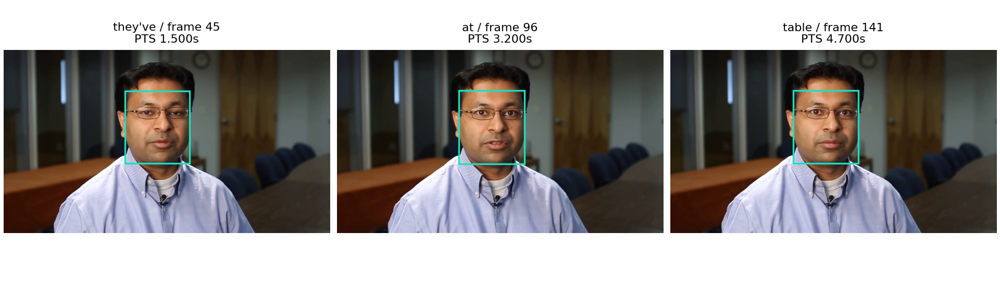

附件一的100条视频及给定文本需要转化为可使用、可追溯的三模态特征。本问的核心是说明“提取什么、怎样对应、缺失如何表示”，并交付全部样本的实际特征。
采用一条处理主线：核对样本与素材 → 按实际时间解码 → 分别提取文本、声音和视觉特征 → 建立词与声音的对应 → 按时间交叠汇聚 → 保存特征、时间及有效标记。模型均作为固定提取器使用，不以附件一情感标签训练或调参。
音频转为16 kHz单声道，采样时间和视频呈现时间戳PTS均相对容器起点。设音频起点为a、采样数为N，末帧PTS为t，末帧包时长为δ，观测终点定义为：
D = max(a + N/16000, t + δ).
此定义保留实际静音和画面，不把容器声明中没有观测的空尾计为有效数据；各模态真实覆盖范围另行记录。
| 模态 | 表示与维度 | 提取方式及作用 |
|---|---|---|
| 文本 | 上下文词向量，768维 | bert-base-uncased最后层；原文字符范围对应的子词向量平均，保留语义及上下文。 |
| 声音 | 原生47维；汇聚后97维 | MFCC、能量、频谱、F0与有声概率，描述音色及韵律。 |
| 视觉 | 表情52维；场景512维 | MediaPipe面部形变参数与ResNet18全局池化表示，分别描述面部运动和画面外观。 |
文本编码保留标点和数字；说话人元数据用等长空白替代。对齐文本另作大小写统一及数字、缩写的口语展开，并保存每个词到原文字符、BERT子词的位置映射。设对应子词集合为B_w，则 h_w = Σ(k∈B_w) H_k / |B_w|。本批无超长截断及未知词元。[1]
声音采用25 ms Hann窗、20 ms步长、512点FFT、64个Mel滤波器（20–8000 Hz）；13维MFCC及各13维一、二阶差分，加log-RMS、过零率、谱质心、带宽、85%滚降频率、平坦度、F0和有声概率，共47维。差分窗口9帧；pYIN窗64 ms、F0范围50–500 Hz。[2]
汇聚输出47维均值、47维标准差、F0半音值12log₂(F0/27.5)的均值与标准差、有声比例，共97维。F0及半音仅用有声观测计算；无声不当作0 Hz参与平均，音高四列单独设置有效标记。
视觉约每100 ms取帧，保留实际PTS和原帧索引。MediaPipe最多检测3张脸，取面积最大者；整帧失败时用YuNet框选区域重试。检测及存在阈值均为0.5。ResNet18采用IMAGENET1K_V1权重、短边256及中心裁剪224。表情和场景独立设有效标记。[3–4]
用MMS_FA处理音频和规则化文本，在CTC合法路径上作对数域前后向递推，允许状态停留、前进一步及合法跨两步转移，并用首尾上下文状态容纳句外声音。[5] 设词w的进入、退出分布分别为a_w(t)、b_w(t)，其在声学位置t的占用权重为：
γ_w(t) = Σ(u≤t) a_w(u) − Σ(u<t) b_w(u).
保留进入、退出的5%、50%、95%分位，中位数用于展示词区间，完整γ用于特征汇聚；低于10⁻⁴的尾部置零。模型步长320采样、感受野400采样，第k个位置的时间锚点为a+(320k+199.5)/16000；相邻锚点中点划分时间单元C_t，首尾截于真实音频范围。
另用固定Whisper small识别结果检查给定文字与声音是否相符。词级使用标记G_w要求：英语；词匹配且整句差异比例≤0.25或属于至少3词的连续匹配段；识别词概率≥0.5；CTC词分数≥0.3；条件时间宽度和两种估计的区间间隙均≤0.2 s。阈值固定用于决定是否使用词级对应，不解释为正确概率。
把相邻原生观测间的特征近似为分段常值。设观测x_j的时间单元为I_j、有效标记为M_j，以时间交叠量定义权重：
q_wj = M_j Σ_t γ_w(t) |C_t ∩ I_j|.
μ_w = Σ_j q_wj x_j / Σ_j q_wj; σ²_w = Σ_j q_wj (x_j − μ_w)² / Σ_j q_wj.
声音保存均值与标准差，表情和场景保存均值；音高计算再乘有声标记。有声比例为有效有声权重之和除以全部有效声音权重。视频单元由相邻采样帧PTS的中点划分。
仅当G_w=1且有效时间不少于max(5 ms, 0.05×Σ_t γ_w(t)|C_t|)时采用该模态输出；音高另需至少5 ms有声时间。无效值置零并关闭标记，使用者不能凭数值是否为零判断缺失。表情缺失不影响同一词的场景分支。
所有样本均保存原生序列；无法建立词级对应时，保留文本和实际音视频，不强行分配词时间。读取器可按需生成100 ms网格 J_l=[0.1l,min(0.1(l+1),D))：声音、视觉直接按交叠时长汇聚，文本只通过γ及G映射到相应网格。
磁盘保存变长序列；批处理才按批内最大长度在右侧补零，同时输出lengths、sequence_mask和各模态掩码。原生、词级、时间网格是同一数据的不同组织方式；词级关系缺失不会导致原始样本被删除。
上述设计用统一的时间权重处理采样尺度差异，并将“存在该模态”和“可与文字对应”分开。其价值在于结果可读、可追溯和能处理异常，不另增预测器或扩大特征拼接。
100条样本全部生成NPZ和对应JSON，共1948个文本词、7905个100 ms网格位置。观测终点合计786.278 s，容器声明合计1120.144 s；其中82条声明空尾超过0.5 s，故序列长度依据实际观测计算。
| 输出 | 可用数量 | 结果说明 |
|---|---|---|
| 文本 | 1948词 | 全部保留原文字符及子词对应 |
| 词级声音、场景 | 各1464词 | 仅在词级使用规则通过时汇聚 |
| 词级音高、表情 | 1253词、1420词 | 按各自有效标记读取 |
| 声音、场景网格 | 各100条样本 | 不依赖词级关系是否可用 |
| 表情网格 | 96条样本 | 其余4条保留其他模态 |
20条没有可采用的词级音视频关系，484个未对应词仍保留文本。现有自动诊断包括未检出语音4条、英文文本一致性低13条、非英语或语言判断不确定3条；这些诊断不作为人工事实标注。全部20条仍有声音和场景网格，其中16条有表情网格。
样本-3g5yACwYnA$_$13的原文为“They've been able to find solutions or at least bring some answers to the table.”，观测终点5.500 s。以下区间均按零基、左闭右开表示。
| 原文片段与字符区间 | 声音区间/s | 视频原帧段 | 使用方式 |
|---|---|---|---|
| find [21,25) | 2.162–2.402 | [65,73) | 词级三模态对应 |
| solutions [26,35) | 2.442–2.962 | [74,89) | 词级三模态对应 |
| or [36,38) | 不采用词级估计 | 不作词级对应 | 保留文本与原生音视频 |
solutions对应第5行：text[5]为768维，BERT位置为[8]；word_audio[5]为97维，F0均值103.28 Hz、有声比例0.692；word_expression[5]为52维，左/右口角参数0.042/0.041；word_scene[5]为512维。该区间包含原帧81，PTS为2.700 s。示例展示区间使用中位数，实际向量按完整时间权重汇聚。

完整逐词关系见typical_example.json及样本JSON。示例说明文字、声音时段、视频帧和特征行可逐项连接，而不是只展示三个互不对应的向量。
逐条核对来源摘要、样本编号、数组维度、时间范围及补零标记，并独立按时间交叠重算音高汇聚。共3700项来源与结构检查通过，独立音高汇聚的最大缩放误差为5.53×10⁻⁸。对全部1948词检查了原文映射；50/100/200 ms网格的有效观测时间积分一致。
已从空结果目录重新运行16个步骤，未复用样本特征，100条样本的3400个数组及掩码逐元素重现。复用固定模型与镜像时，成功步骤累计696.10 s。该耗时属于提取、推理与检查；固定模型无需从头训练，首次下载和构建环境另计。
先以波形匹配确定公开长视频与题目片段的起点，再比较同一内容上的结果；37个源视频中，97条片段通过定位检查，归一化互相关中位数0.9911。声音、视觉使用同源公开计算序列，文本另用附件二中相同输入上下文的预计算表示。不读取情感标签值，也不将参考特征回填为本问输出。[6]
| 对照项目 | 范围 | 主要结果 |
|---|---|---|
| 文本（附件二） | 14个相同BERT上下文、275词 | 向量平均绝对差5.86×10⁻⁷ |
| 声音 | 38174个匹配帧 | 有声判定一致78.10%；19466个共同有声帧的F0差中位数0.1283半音，93.16%在1半音内 |
| 人脸可用性 | 7728个匹配位置 | 本地检测标记与公开OpenFace2成功标记一致97.96% |
这些结果支持来源对应及所测属性的一致性；不同视觉描述体系不作逐维等同，公开算法输出也不是人工真值。所测差异和可用范围随结果保留，用于评估提取过程是否合理。
在100条音频的原始、前置0.6 s静音、振幅减半和20 dB白噪声条件下，MMS与Wav2vec2共运行800次推理。固定1464个可用词，MMS扣除已知平移后的边界变化95分位依次为20、0、20 ms；加噪时MMS无变化超过100 ms的词，Wav2vec2有9词。
后续Qwen多起点与物理约束方案改善了部分公开时间参考的一致性，但在全部可对照词及噪声下的特征稳定性上未形成一致优势。因此主输出保留已完成全量复现的MMS时间权重方案；不把多个候选并列拼接，也不宣称MMS在所有目标下最优。对照摘要及完整研究档案入口见资料索引。
多脸场景取最大脸，未验证其一定是说话人；强制对齐依赖文字与声音基本相符；20条样本暂不能提供可用词级关系。相应影响已通过独立模态掩码、原生序列及时间网格显式保留。若后续任务确需说话人归属或更细语音对应，再针对这些样本研究，不能把当前输出解释为已解决这些问题。
本问已完成全100条特征提取、时间组织、缺失处理、示例展示及复现交付。其结论限于这一处理任务；情感预测收益由后续问题在规定数据划分上另行评估。
每个sample_id唯一对应features/samples中的一份NPZ和同名JSON；文件名将“$_$”替换为“__”，JSON保留原编号。NPZ存原生序列、词级向量、时间及掩码；JSON存原文、词映射、素材摘要与处理来源。features/全100条特征汇总.csv给出精确时长、长度和文件摘要；input_contract.json定义字段。
原生声音为L_A×47、表情为L_V×52、场景为L_V×512；词级文本、声音、表情、场景依次为L_W×768、L_W×97、L_W×52、L_W×512。100 ms网格采用相同输出维度并按需生成，不能将网格总长度当作每种模态的有效长度。
Python 3.11与NumPy 2.2.6可直接读取。运行 python scripts/q1v6_reader_check.py --features features，即检查100条、1948词和7905个网格位置。load_sample支持native、word、clock三种读取方式，collate输出填充序列及标记；可直接运行的例子见README.md。
把原题附件父目录设为.env中的DATA_ROOT_HOST，使/data下出现附件1；使用空results目录，按基础、q1、q1-next、q1-refinement顺序构建随附Docker镜像。在最终镜像中依次运行：
q1_prepare → q1_extract → q1_quality → q1_scene → q1n_prepare → q1n_asr → q1n_posterior → q1n_audit → q1f_prepare → q1f_faces → q1v6_alignment → q1v6_media_clock → q1v6_features → q1v6_validate → q1v6_geometry → q1v6_visualize.
最终特征生成于results/q1_deep_v6/features_v2。该顺序包含原生提取、对齐检查及验证所需中间结果；最后一级按本文的有声F0与时间汇聚定义生成交付特征。README.md提供完整命令，rebuild_logs及reproduction保存既有重建记录。不同硬件下允许比较合理浮点误差，掩码和来源需另行核对。
| 组件 | 固定版本或权重 |
|---|---|
| 基础运行 | Python 3.11.13；PyTorch/Torchaudio 2.7.1+cu126；NumPy 2.2.6 |
| 文本、声音 | Transformers 4.52.4；bert-base-uncased固定revision；Librosa 0.11.0；MMS_FA固定权重 |
| 识别与视觉 | faster-whisper 1.2.1（small）；MediaPipe 0.10.32；OpenCV 4.11.0.86；ResNet18 IMAGENET1K_V1 |
模型摘要、BERT revision、Whisper锁文件与人脸恢复参数随evidence保存；参数以最终features配置、input_contract和本文定义为准，早期中间层配置不覆盖最终接口。容器文件保留固定依赖和基础镜像摘要；原视频及大型通用权重不重复打包。
[1] Devlin等. BERT: Pre-training of Deep Bidirectional Transformers for Language Understanding. NAACL, 2019. https://aclanthology.org/N19-1423/
[2] Librosa 0.11.0. pyin：基频、有声标记与概率接口. https://librosa.org/doc/0.11.0/generated/librosa.pyin.html
[3] Google AI Edge. Face Landmarker：面部标志点与表情参数. https://ai.google.dev/edge/mediapipe/solutions/vision/face_landmarker
[4] Torchvision. ResNet18及IMAGENET1K_V1预处理. https://docs.pytorch.org/vision/0.22/models/generated/torchvision.models.resnet18.html
[5] Torchaudio 2.7.0. MMS_FA及强制对齐接口. https://docs.pytorch.org/audio/2.7.0/generated/torchaudio.pipelines.MMS_FA.html
[6] CMU Multimodal SDK及MOSEI计算序列. https://github.com/CMU-MultiComp-Lab/CMU-MultimodalSDK 。本次镜像、版本与摘要另见external_validation/sources。
所有样本均保留文本、声音及视觉文件；缺失位置用掩码表示。共同维度：文本768，声音原生47/汇聚97，表情52，场景512。原生声音步长20 ms，视觉约100 ms；词级按词汇聚，网格100 ms。
D为观测终点（秒，表内保留3位小数）；A/V为原生声音/视觉行数；W/U为总词数/可用词级声音与场景数；E为可用词级表情数；gA/gE/gS为声音/表情/场景有效网格数；L为网格总长度。各模态未观测区间不计有效长度，详细区间及精确数值见对应JSON和CSV。
| 样本ID | D/s | A/V | W/U | E | gA/gE/gS | L |
|---|---|---|---|---|---|---|
| -3g5yACwYnA$_$13 | 5.500 | 270/55 | 15/14 | 14 | 54/55/55 | 55 |
| -3g5yACwYnA$_$3 | 14.367 | 717/144 | 29/28 | 28 | 144/144/144 | 144 |
| -3g5yACwYnA$_$2 | 9.367 | 462/93 | 14/11 | 11 | 93/94/94 | 94 |
| -3g5yACwYnA$_$9 | 8.800 | 435/88 | 23/22 | 22 | 87/88/88 | 88 |
| -3nNcZdcdvU$_$5 | 7.867 | 390/79 | 18/16 | 16 | 78/78/79 | 79 |
| -HwX2H8Z4hY$_$2 | 3.967 | 196/40 | 4/3 | 2 | 40/14/40 | 40 |
| -HwX2H8Z4hY$_$5 | 5.633 | 278/56 | 9/9 | 2 | 56/20/57 | 57 |
| -HwX2H8Z4hY$_$6 | 3.333 | 163/33 | 7/6 | 4 | 33/23/34 | 34 |
| -HwX2H8Z4hY$_$9 | 7.733 | 382/78 | 22/17 | 1 | 77/6/78 | 78 |
| -NFrJFQijFE$_$1 | 5.720 | 283/57 | 16/0 | 0 | 57/0/58 | 58 |
| -NFrJFQijFE$_$2 | 6.840 | 335/68 | 18/0 | 0 | 67/0/69 | 69 |
| -THoVjtIkeU$_$12 | 14.867 | 741/149 | 39/37 | 37 | 149/149/149 | 149 |
| -THoVjtIkeU$_$2 | 4.267 | 212/43 | 10/10 | 10 | 43/43/43 | 43 |
| -THoVjtIkeU$_$6 | 8.067 | 400/81 | 30/23 | 23 | 80/81/81 | 81 |
| -UuX1xuaiiE$_$1 | 10.333 | 514/104 | 27/27 | 27 | 103/104/104 | 104 |
| -UuX1xuaiiE$_$0 | 3.700 | 179/37 | 9/8 | 8 | 36/37/37 | 37 |
| -UuX1xuaiiE$_$3 | 4.100 | 202/41 | 9/8 | 8 | 41/41/41 | 41 |
| -UuX1xuaiiE$_$6 | 8.100 | 398/81 | 23/22 | 22 | 80/81/81 | 82 |
| -a55Q6RWvTA$_$3 | 22.133 | 1105/222 | 65/61 | 61 | 221/222/222 | 222 |
| -aNfi7CP8vM$_$7 | 8.667 | 427/87 | 18/14 | 14 | 86/87/87 | 87 |
| -aqamKhZ1Ec$_$0 | 11.000 | 545/110 | 17/10 | 10 | 109/110/110 | 110 |
| -dxfTGcXJoc$_$1 | 16.133 | 801/162 | 38/35 | 35 | 161/162/162 | 162 |
| -dxfTGcXJoc$_$0 | 20.533 | 1021/206 | 45/37 | 30 | 205/161/206 | 206 |
| -dxfTGcXJoc$_$2 | 16.667 | 832/167 | 37/31 | 31 | 167/167/167 | 167 |
| -dxfTGcXJoc$_$6 | 12.733 | 632/127 | 30/26 | 26 | 127/128/128 | 128 |
| -egA8-b7-3M$_$26 | 6.000 | 297/60 | 15/15 | 15 | 60/60/60 | 60 |
| -egA8-b7-3M$_$17 | 7.267 | 355/72 | 16/16 | 16 | 71/73/73 | 73 |
| -egA8-b7-3M$_$18 | 8.367 | 414/84 | 22/21 | 21 | 83/84/84 | 84 |
| -egA8-b7-3M$_$16 | 5.533 | 275/56 | 11/11 | 11 | 55/56/56 | 56 |
| -egA8-b7-3M$_$13 | 4.167 | 202/42 | 11/11 | 11 | 41/42/42 | 42 |
| -egA8-b7-3M$_$1 | 10.233 | 508/102 | 22/16 | 16 | 102/103/103 | 103 |
| -egA8-b7-3M$_$6 | 6.233 | 310/63 | 12/12 | 12 | 62/63/63 | 63 |
| -egA8-b7-3M$_$9 | 5.067 | 247/51 | 10/10 | 10 | 50/51/51 | 51 |
| -egA8-b7-3M$_$20 | 6.633 | 324/66 | 20/20 | 20 | 65/67/67 | 67 |
| -iRBcNs9oI8$_$3 | 5.606 | 277/56 | 8/0 | 0 | 56/57/57 | 57 |
| -iRBcNs9oI8$_$7 | 4.071 | 201/41 | 9/0 | 0 | 41/41/41 | 41 |
| -iRBcNs9oI8$_$6 | 2.870 | 142/29 | 5/0 | 0 | 29/29/29 | 29 |
| -iRBcNs9oI8$_$9 | 3.403 | 169/34 | 5/0 | 0 | 34/25/34 | 35 |
| -iRBcNs9oI8$_$8 | 8.075 | 402/81 | 21/0 | 0 | 81/81/81 | 81 |
| -lzEya4AM_4$_$5 | 7.667 | 379/77 | 19/18 | 18 | 76/77/77 | 77 |
| -lzEya4AM_4$_$6 | 14.767 | 738/148 | 43/41 | 41 | 148/148/148 | 148 |
| -mJ2ud6oKI8$_$1 | 6.073 | 303/61 | 13/0 | 0 | 61/0/61 | 61 |
| -mJ2ud6oKI8$_$2 | 5.706 | 286/57 | 11/0 | 0 | 57/25/58 | 58 |
| -mJ2ud6oKI8$_$6 | 2.236 | 112/23 | 5/0 | 0 | 23/23/23 | 23 |
| -mJ2ud6oKI8$_$9 | 7.007 | 346/70 | 22/0 | 0 | 70/71/71 | 71 |
| -mJ2ud6oKI8$_$8 | 4.171 | 209/42 | 11/0 | 0 | 42/42/42 | 42 |
| -mqbVkbCndg$_$0 | 6.500 | 320/65 | 14/13 | 13 | 64/65/65 | 65 |
| -t217m2on-s$_$2 | 5.667 | 282/57 | 12/10 | 10 | 57/57/57 | 57 |
| -t217m2on-s$_$7 | 17.167 | 852/172 | 45/44 | 44 | 171/172/172 | 172 |
| -tANM6ETl_M$_$3 | 6.733 | 331/68 | 22/21 | 21 | 66/68/68 | 68 |
所有样本均保留文本、声音及视觉文件；缺失位置用掩码表示。共同维度：文本768，声音原生47/汇聚97，表情52，场景512。原生声音步长20 ms，视觉约100 ms；词级按词汇聚，网格100 ms。
D为观测终点（秒，表内保留3位小数）；A/V为原生声音/视觉行数；W/U为总词数/可用词级声音与场景数；E为可用词级表情数；gA/gE/gS为声音/表情/场景有效网格数；L为网格总长度。各模态未观测区间不计有效长度，详细区间及精确数值见对应JSON和CSV。
| 样本ID | D/s | A/V | W/U | E | gA/gE/gS | L |
|---|---|---|---|---|---|---|
| -tPCytz4rww$_$11 | 5.467 | 269/55 | 17/10 | 10 | 54/55/55 | 55 |
| -tPCytz4rww$_$10 | 4.767 | 234/48 | 12/10 | 10 | 47/48/48 | 48 |
| -tPCytz4rww$_$12 | 11.833 | 587/119 | 26/18 | 18 | 118/119/119 | 119 |
| -tPCytz4rww$_$16 | 7.200 | 357/72 | 16/12 | 12 | 72/72/72 | 72 |
| -tPCytz4rww$_$18 | 6.633 | 329/66 | 16/14 | 14 | 66/67/67 | 67 |
| -vxjVxOeScU$_$4 | 9.100 | 452/91 | 21/18 | 18 | 91/91/91 | 92 |
| -wMB_hJL-3o$_$7 | 6.033 | 299/61 | 22/22 | 22 | 60/60/61 | 61 |
| -wny0OAz3g8$_$1 | 6.833 | 339/68 | 22/21 | 21 | 68/69/69 | 69 |
| -wny0OAz3g8$_$0 | 3.333 | 164/33 | 9/9 | 9 | 33/34/34 | 34 |
| -wny0OAz3g8$_$3 | 6.133 | 305/61 | 20/19 | 19 | 61/62/62 | 62 |
| -wny0OAz3g8$_$2 | 6.667 | 327/67 | 23/23 | 23 | 66/67/67 | 67 |
| -wny0OAz3g8$_$5 | 6.900 | 338/69 | 20/20 | 20 | 68/69/69 | 69 |
| -wny0OAz3g8$_$7 | 8.067 | 396/81 | 29/25 | 25 | 80/81/81 | 81 |
| -wny0OAz3g8$_$9 | 6.200 | 303/62 | 20/19 | 19 | 61/62/62 | 62 |
| -571d8cVauQ$_$0 | 5.167 | 250/52 | 12/10 | 10 | 50/51/52 | 52 |
| -571d8cVauQ$_$5 | 15.267 | 756/152 | 43/41 | 41 | 152/153/153 | 153 |
| -I_e4mIh0yE$_$1 | 7.600 | 373/76 | 18/18 | 18 | 75/76/76 | 76 |
| -I_e4mIh0yE$_$3 | 9.133 | 450/91 | 22/15 | 15 | 90/92/92 | 92 |
| -UacrmKiTn4$_$10 | 7.333 | 363/73 | 18/18 | 18 | 73/74/74 | 74 |
| -UacrmKiTn4$_$4 | 4.733 | 235/48 | 14/14 | 14 | 47/48/48 | 48 |
| -hnBHBN8p5A$_$7 | 7.341 | 366/73 | 13/0 | 0 | 74/52/74 | 74 |
| -hnBHBN8p5A$_$6 | 6.381 | 317/64 | 13/0 | 0 | 64/37/64 | 64 |
| -qDkUB0GgYY$_$6 | 4.667 | 231/47 | 16/14 | 14 | 47/47/47 | 47 |
| -uywlfIYOS8$_$4 | 6.033 | 295/61 | 18/17 | 17 | 59/61/61 | 61 |
| -6rXp3zJ3kc$_$8 | 12.800 | 637/128 | 34/30 | 30 | 128/128/128 | 128 |
| -9y-fZ3swSY$_$0 | 6.900 | 338/69 | 22/10 | 10 | 68/69/69 | 69 |
| -9y-fZ3swSY$_$4 | 2.800 | 134/28 | 11/10 | 10 | 27/28/28 | 28 |
| -9y-fZ3swSY$_$8 | 4.967 | 246/50 | 12/10 | 9 | 50/46/50 | 50 |
| -AUZQgSxyPQ$_$2 | 22.500 | 1121/225 | 41/32 | 32 | 224/225/225 | 225 |
| -HeZS2-Prhc$_$2 | 8.233 | 408/82 | 16/15 | 15 | 82/83/83 | 83 |
| -MeTTeMJBNc$_$0 | 9.333 | 461/94 | 21/21 | 21 | 93/94/94 | 94 |
| -MeTTeMJBNc$_$13 | 5.400 | 263/54 | 14/12 | 12 | 53/54/54 | 54 |
| -MeTTeMJBNc$_$7 | 10.500 | 521/105 | 31/28 | 28 | 105/105/105 | 105 |
| -RfYyzHpjk4$_$11 | 5.233 | 254/52 | 17/17 | 17 | 51/53/53 | 53 |
| -RfYyzHpjk4$_$8 | 4.567 | 227/46 | 17/16 | 16 | 46/46/46 | 46 |
| -RfYyzHpjk4$_$2 | 5.500 | 270/55 | 25/18 | 18 | 54/55/55 | 55 |
| -UUCSKoHeMA$_$0 | 7.867 | 387/79 | 18/18 | 18 | 78/79/79 | 79 |
| -ri04Z7vwnc$_$0 | 2.794 | 139/28 | 8/0 | 0 | 28/0/28 | 28 |
| -ri04Z7vwnc$_$2 | 6.006 | 296/60 | 16/0 | 0 | 60/24/61 | 61 |
| -ri04Z7vwnc$_$5 | 3.504 | 172/35 | 8/0 | 0 | 35/35/35 | 36 |
| -s9qJ7ATP7w$_$1 | 4.767 | 233/47 | 11/9 | 9 | 47/48/48 | 48 |
| -s9qJ7ATP7w$_$0 | 6.867 | 336/69 | 24/16 | 16 | 68/69/69 | 69 |
| -s9qJ7ATP7w$_$5 | 8.533 | 420/85 | 19/19 | 19 | 84/86/86 | 86 |
| -s9qJ7ATP7w$_$4 | 4.400 | 213/44 | 9/8 | 5 | 43/31/44 | 44 |
| -s9qJ7ATP7w$_$7 | 6.933 | 342/70 | 28/20 | 13 | 69/53/70 | 70 |
| -s9qJ7ATP7w$_$6 | 2.467 | 116/24 | 5/3 | 3 | 24/19/25 | 25 |
| -s9qJ7ATP7w$_$8 | 3.267 | 160/33 | 12/11 | 11 | 32/33/33 | 33 |
| -yRb-Jum7EQ$_$1 | 29.267 | 1456/293 | 49/0 | 0 | 292/293/293 | 293 |
| -yRb-Jum7EQ$_$5 | 13.167 | 653/132 | 25/0 | 0 | 131/132/132 | 132 |
| -yRb-Jum7EQ$_$6 | 11.243 | 563/112 | 19/0 | 0 | 113/112/112 | 113 |